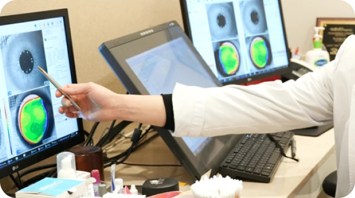
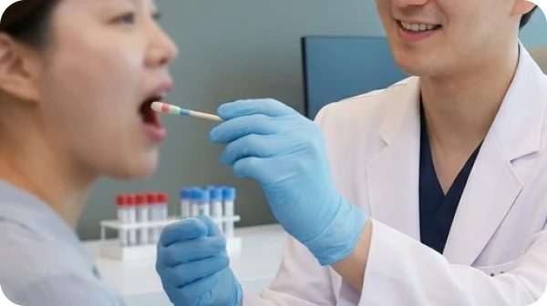
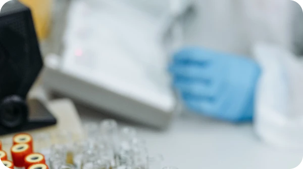

70여 가지 입체적 정밀 안전 검증을 바탕으로 수술 적합성을 판단합니다. 정확한 진단과 철저한 검사가 안전한 시력교정의 기준입니다.
유전적 이상에 의해 각막에 하얀 반점과 같은 혼탁이 나타나는 질환으로 나이가 듦에
따라 점차 혼탁이 많아져서 시력이 감소하게 되는 증상입니다.
부모 중 한 사람의 아벨리노 각막이상증 유전자를 물려받음
한 쌍의 유전자 모두가 아벨리노이상증 유전자로 이루어짐


